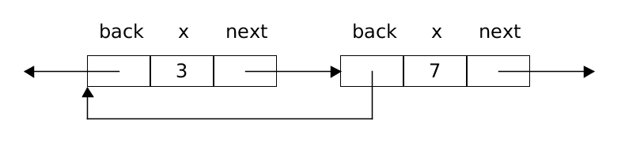
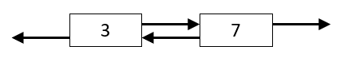
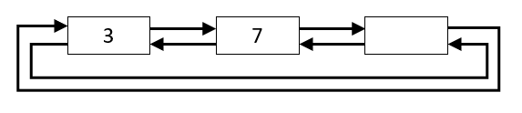

The coursework over the next three weeks (two weeks + explore week) counts 30% towards your credit for the unit. The main purpose is to practice using pointers. All code you submit must be your own, do not copy any code parts from peers or other sources. The programs we use for checking against the web, your peers and other sources are advanced. (Plagiarism may result in 0 marks for the coursework, the entire unit or worse.) Use only standard libraries, if any, so your code compiles and runs without linking any extra libraries.
Your closed task is to write a reusable library module for lists. It should be implemented via circular doubly-linked lists with one sentinel node. You are provided with these files:
Header File is the API. The header
file lists.h forms its API,
which you should not change, but which you should read carefully because the
comments describe what the functions do. The list.c file has no skeletons this time,
just two data structures node and list which you must use, and tests.
Thus, the program does not compile as given to you.
A List of Items. The header is set up to store item values in lists. In the header item is defined
as int to provide an example case. However, item must be used as a synonym for int everywhere in your code,
so that there is only one place in the header file where a change would need to be made to store some other type of items. This means the module
can be used with different item types in different programs. For those who are interested, note that even this it is not truly generic since the
setup cannot be used multiple times for different item types in the same program. There is no really satisfying way of
making fully generic modules in C. It is recommended, as a last test before submitting, that you change the item
type to double, to check that you haven't inadvertently assumed int anywhere. (The numbers used in the tests should still
work as doubles.)
Conceptual Design. The header doesn't say that the list is to be doubly linked, nor to be circular, or use a sentinel node (comments in list.c do though).
That's because a user of the module need not know or care, and the implementation could be
changed to something completely different in a later version of the module,
without any effect on programs that use it. On the other hand, the header does say that all the operations are constant
time. This is a strong hint that the implementation does use a doubly linked list or something similar, because it is difficult to achieve constant
time operations otherwise. The claim of constant time doesn't cover the vagueness in
the time taken by malloc and free calls but, conventionally, memory management costs are considered separately from the
'logic' costs of operations. The function names use the camelCase convention, where
capitals make the letters go up and down like the humps on a Bactrian
camel. I should point out, for those who are interested, that
including a current position in a list structure itself is not thread safe. A
more thread-safe approach is to create a separate iterator object each time the
list is traversed. However, that approach can still easily lead to 'concurrent
modification' problems where the list structure is changed by one thread while
another is traversing it. It is much safer to make sure that a list is owned by
a single thread.
Hiding Pointer Structure within Modules. Pointer programming is notorious in C for causing segfaults and similar problems. The best approach for using them in ordinary applications is to put all the pointer code into separate modules, each with an opaque type and a suitable API like this list module, make sure that other modules and programs are insulated from the details, and make full use of the advanced debugging options.
Your first task is to turn lists.c into a full skeleton program
that compiles. You can do this without understanding all of the technicalities of the assignment.
First, include a line #include "lists.h" in lists.c and also include any standard library headers
which you think you are going to need.
Two Key Data Structures. A structure for the nodes which make up the list is defined, and a structure for the list itself.
The node structure struct node is not visible to the user of the module. Each node is used to hold an item and pointers
to the two neighbouring nodes (next and back) which define the list ordering.
The overall list structure struct list represents a list and
is essential so newList can return something to the user which is well defined.
This structure holds two pointers: one to the sentinel node of the list and one to the currently selected node.
Read the code comments about the list structure carefully.
You will have to use the two data structures exactly as described to comply with the tests.
Define Dummy Functions. Write a minimal dummy definition of each of the functions mentioned in the
header file. The safest way to do that is to copy-and-paste a function's declaration from lists.h, then replace the semicolon by
curly brackets. If the function returns anything other than void,
add a return statement which returns the easiest temporary value of that type
you can think of (e.g. NULL for a pointer, false for
a boolean). For functions returning an item, you can return 0 for now,
but beware that depends on item being int, so
it will need to be fixed later. At this point, check that the program compiles.
Many programmers use visualisations as a help when programming with pointers. There is usually nothing better than scribbling on paper or a whiteboard to sort out the ideas. Thus, lets go through some visualisations to help with this assignment. Two neighbouring nodes in a doubly linked list can be pictured like this:
This emphasizes that a node contains three fields. But it is a bit too detailed to use often. For most purposes, you can simplify like this:
The pointer fields are implicit: a pointer from the left end of a node is its back pointer, and a pointer from the right end is its next pointer. A pointer to anywhere on a node's rectangle means a pointer to the start of the node.
Sentinel Node. It used to be a standard solution to implement doubly-linked lists by keeping track of the first and last node of the list (like the 3 node and 7 node in the picture above), where the first node would point backward to NULL, and the last node would point forward to NULL. However, it turns out that adding an extra node, called a sentinel node, simplifies the functions and makes code much more readable. For a circular, doubly-linked list our sentinel node is linked in between the first and last item in the list:
The sentinel node is visualised without an item value since the data item in it does not represent any payload of the list.
To reflect this, the pointer from the list structure to the sentinel node is named none in the provided code.
If there are item nodes in our list, none->next should link to the first item, and none->back should link to
the last item. So we get simple access to both ends of the list and we do not need to store pointers to the first or last node anywhere
else. We can also confidently represent a new 'empty' list with no item nodes like this:
Here both the back and next pointers of the sentinel node simply point to the sentinel node itself.
Note that pointers to the sentinel node never need to be updated, unlike pointers to the first and last nodes.
The Structure list. To represent a list in the list data structure we need two node pointers: one fixed pointer to the
sentinel node (called none) to access both list ends in constant time, and one current pointer that points
to a current node in the list allowing for traversals:
In the above image the current position is the node that holds 7, so item 7 is selected. If the current pointer in a list points to
none then we will interpret this as 'no item is selected':
Picturing Functions. To visualize what a function does, draw a picture of the situation before the
call, and another of the situation after the call. For instance, the after function applied to our list when the item 3
is selected would have the simple effect of moving the current pointer one step forward in the list to item 7:
Applying the after function to our list when the item 7 is selected moves the current pointer one step
forward to the sentinel node, meaning 'no item' is selected after the call:
Read the code comments about each of the functions in the header file carefully and understand how your circular, doubly-linked list would implement the required behaviour. Whenever in doubt, draw a picture of a particular situation before and after a function call to understand the detailed workings.
There is a separate test function for each list function, except
freeList which can't be tested directly. The tests specify each function using before and after pictograms
compressed into strings. Single digits represent items and the '|' symbol in front of a digit indicates that this is
the current item. If the '|' symbol is at the end of the string then 'none' of the items is selected. The strings
"|37", "3|7", "37|" represent a list of two items, with the current position at the first item, the last item, and a
situation where 'none' of the items is selected.
The tests utilise this pictogram string notation to drive the testing.
For example, the one-line test for applying the after function when item 3 is selected in our example list will be encoded as:
assert(__LINE__, check(After, -1, "|37", "3|7", true));The one-line test for inserting 5 when the current item is 3 in our example list using the
insertAfter function is:
assert(__LINE__, check(InsertAfter, 5, "|37", "3|57"));
There is a different check
function for each function type. The check function builds a list matching the before picture,
calls the given function (in this case insertAfter with 5 as the
second argument) and compares the result to the after picture.
Checks and Default. Most functions are designed to return a testable value. For example, if no item is selected, a call of after does nothing and returns false, which is easy to test.
The get function returns an item in any case. It can't return -1 for example, because
item might not be int. To make sure there is an item
which can be returned in any case, the newList function is
passed a default item. The default item should be stored in the
sentinel node.
Function Descriptions. What does each function do? There is a detailed comment for each function in the list.h header which gives a summary. For each function, there is a test function with some assert
calls. These show precisely what the function does on the empty list "|" and a list with two items in at least each of the three cases "|37" and "3|7" and "37|". That should be enough for you to work out what the function does in every possible case.
Details on Support Functions. The functions build, destroy and match form the heart of the testing and are implemented 'brute force'. The build function is used to build a list from the 'before' picture of a test, the function being tested is applied to the list, match is used to check that the result list matches the 'after' picture, and destroy frees up the list. Each of the functions uses an array of nodes in a very direct manner, so there is no ambiguity about what is going on. But that is not a technique you are supposed to be using in the list functions, because they are must take O(1) constant time. The destroy function may well be different from your freeList function, because the details of how test lists are wired up may be different from your lists. It is only supposed to be used for lists made using build. The style of testing set up here is very carefully designed to allow you to work on one list function at a time.
Programming with pointers is difficult. When a test fails, there is generally a segfault or similar, which can be very difficult to track down. You will need to use several or maybe all of:
-Wall -pedantic-g option and gdbDevelop newList. The first thing to do, in main, is to comment out all the tests except testNewList. After that, keep all the tests beyond the one you are working on commented out. That's because if a test fails, causing a segfault, it may be unreasonably difficult to know which test function caused it Develop newList until it passes its test, and you don't get any messages from the various compiler options.
Develop freeList. For all the functions, the compiler options test things that the tests themselves can't. In the case of freeList, there is no explicit testing that can be done. Therefore the only testing is that memory leak detection does not give any messages.
You may find that your function only works for the empty list, so that you
have to come back and sort it out during the development of later functions.
Develop in Small Steps. You may want to stick to the development sequence given by the test sequence for the functions. Thus, step by step uncomment the call to its testing function first, develop and test. Remember, the more exceptions and different cases your code handles, the more liable it is to have bugs in, because there are more places for bugs to hide, and it is harder for you to see at a glance that the code is correct. You aren't being given much opportunity for making your own implementation decisions in this assignment. That simplifies checking correctness, and allows us to help you more easily. It is very tempting to write lines of code like this, with lots of arrows:
current->back->next->...
The trouble is, this is very error-prone. The code may be written with a mental picture of where the nodes were at the start of the function, but one or more of the pointers used in the expression may have been changed already by the time this line is executed. Trouble can arise particularly when shuffling lines of code around. A line of code that used to work may suddenly no longer work. And it is possible to 'lose' a node altogether, because there are no pointers left pointing to it, and therefore no way to reach it.
Use Robust Strategies. In this assignment, the insert and delete functions are the most difficult ones. They involve handling three nodes, either a new 'middle' node being inserted between (up to) two existing ones, or one existing node being deleted and its (up to) two neighbours being linked up together to close the gap in the circular list. A good strategy is to set up three local pointer variables (e.g. p, q and r or whatever you like) for these three nodes at the beginning of a function, so that you
can keep track of them no matter what changes are made to the pointers between
them. Each line of code after that can then be written simply using only one
arrow, and the order in which the lines of code are executed doen't matter, making
the code much more robust.
Enjoy programming! As always use the labs and forum for help and feedback, and if needed the extra labs and the help and feedback desk.
Only if you have time left, and if you are interested or you want more than 50% for the assignment, you can do some extra open-ended work using pointers
in your own program called network.c on the following task:
Using only standard libraries, if any (so your code compiles and runs without linking any libraries),
write a program using node structures and pointer links between them to construct/represent a directed graph (i.e. a directed network) given an input string,
and then implement some interesting network operations of your choice. The input string should be composed of a comma-separated list of dash-separated node pairs,
e.g. "1-2,1-3" representing a network where node 1 links to node 2, and node 1 also links to node 3. A link from one node to another should be modelled
via a pointer from the one node to the other. We recommend to keep things relatively simple at first, for instance, by starting with dealing with loop-free networks
like trees, even binary trees as introduced in the lectures may be a good starting point. As always, the program should contain detailed unit tests created by you
which are run if no command line parameters are provided. Otherwise, the program should take a string describing the network as a command line argument.
It should check for input errors, and if there are none, it should print the information your network operations can extract, e.g.:
./network 1-2,1-3,2-4 number of nodes: 4 tree depth: 3
Write the source file network.c which must compile error-free and warning-free for your submission, and running your tests with advanced
compiler options should convince us that there are no segfaults or memory leaks. Rather submit something simple that works robustly and error-free than buggy
code (which may earn you very few marks only). Write a summary file readme.txt which describes your aims for the program and how far you got
with it in strictly no more than 100 words. There are no marks for report writing, but the summary may be necessary for us to make sense of the program.
Even if your program is very basic and runs fine, still submit it. Whenever you have reached a well working version, take a copy of your work, so you can revert
back to it at any point. For extended work you may want to do some research into networks. If you want to stick with trees, you could allow
for trees with an arbitrary number of links to children per node, or checking that the tree is indeed a valid tree (and has no loops).
The task is truly open-ended though since your program is allowed to deal with not just trees, but arbitrary directed networks.
In this case take care that strings like "1-2,3,2-2" are allowed where node 3 is not linked to any other node and node 2 is linked to itself.
You could look into implementing any network operations you are interested in: from just calculating the average number of neighbours that
can be reached directly per node to something more difficult which you need to research like checking if the network has a Hamiltonian cycle,
calculating the number of cliques in the network, or if one network can structurally/topologically be found as part of another one (providing two networks as input). If you want to allow for weighted links between nodes you can extend the syntax of the input parameter to "1-2/3.14,3,2-2" where 3.14 is the weight associated with the link between node 1 to node 2. If no weight is supplied it is assumed to be 1.0.
The task is truly open-ended, but make sure you do not overspend on time. Make sure your programming adheres to the Unit Programming Style Guide.
Enjoy programming, our lab team and the forum are there for you if you need help!
A mark out of 50 for the extra work will be awarded by swiftly reading the summary, checking whether your program matches what you claim, judging the sophistication and extent of what has been done, and checking whether the program follows the conventions and advice in the lectures. In particular, writing tests as part of the program, in the same way as the skeletons, is very much recommended (though you only need enough tests to make you confident). Also recommended is working in very small steps, one test at a time, keeping your program in a working state. Again, make sure you do manage your time well and stop at a reasonable point. Remember, there are significantly deminishing returns.
The mark will aim to make your total for the assignment meet the university
scale. So assuming you get full marks for the list.c program, for the open-ended task 10/50 means
"this raises your total result from good to very good", 20/50 means "excellent, overall above and beyond what was expected",
30/50 means "truly exceptional work, potential mastery of the subject area" and 40/50 means
"novel and publishable in a research journal".
Submit your work via Blackboard. Submit at least an hour before the deadline to make sure there are no upload problems. The university systems will automatically apply penalties of 10 percent points off per day that coursework is submitted late, even if only by one second. All code you submit must be your own, do not copy any code parts from peers or other sources. The programs we use for checking against the web, your peers and other sources are advanced. (Plagiarism may result in 0 marks for the coursework, the entire unit or worse.)
Closed Task: Submit your program list.c (not List.c or
any other name, unless you want to lose marks, and not the compiled
program). Make sure your program compiles without warnings, runs without leaks or segfaults, and doesn't still contain debugging print statements.
Open-ended Task: If you attempted the open-ended part, then also submit your extra program network.c and a readme.txt file
with any comments you might want to make.